Viskas prasideda nuo tavo medžiagos
Gemini Notebook yra nemokamas Google DI įrankis, veikiantis kaip tavo asmeninis tyrimų ir informacijos asistentas. Skirtingai nei įprasti pokalbių robotai, jis neieško informacijos visame internete ir neišsigalvoja faktų: jis dirba tik su tavo įkeltais failais (PDF dokumentais, užrašais, straipsnių nuorodomis ar mokymų įrašais).
Kuo jis tau naudingas praktiškai:
- Greita paieška tavo failuose: užduodi klausimą ir per kelias sekundes gauni tikslų atsakymą su nuoroda, iš kurios tavo dokumento vietos jis paimtas.
- Turinio idėjos iš tavo medžiagos: iš ilgo mokymo ar balso įrašo akimirksniu ištrauki santrauką ir konkrečias idėjas įrašams.
- Darbo struktūra: iš padrikų užrašų greitai sugeneruoji susitikimo darbotvarkę ar pristatymo planą.
- Audio formatas: ilgus tekstus vienu paspaudimu paverti audio pokalbiu (podkastu), kurį patogu išklausyti pakeliui.
Toliau šiame gide rasi aiškią instrukciją, kaip susikurti savo pirmąjį darbo aplanką ir išnaudoti visas šias funkcijas.
Iš mokymų į naują turinį
Savo pamokose surask pasikartojančias mintis, susidėliok naujo seminaro planą ar pasiruošk įrašų temas.
Iš dokumentų į aiškius atsakymus
Palygink pasiūlymus, paruošk instrukcijos juodraštį ar greičiau surask, kas parašyta tavo procedūrose.
Iš vienos temos į kelis formatus
Surask temas, paruošk skaidrių struktūrą ir tą pačią mintį paaiškink garsu ar vaizdu.
Iš ilgo teksto į supratimą
Paprašyk paprastesnio paaiškinimo, susikurk korteles ir patikrink žinias testu.
Atskira kortelė kiekvienam klientui
Taip pat naudoju šį įrankį kasdieniam darbui su klientais. Kiekvienas mano klientas turi savo kortelę: atskirą užrašinę, kurioje sudedu visą mūsų darbui reikalingą medžiagą: susitikimų transkripcijas, planus, rekomendacijas ir kitus dokumentus. Šios užrašinės su klientu nesidalinu: ją laikau pati sau, kad visada žinočiau, kuriame darbo taške esame ir kas jau padaryta, galėčiau sekti pažangą, pagal ją ruoščiau susitikimų darbotvarkes ir kurčiau medžiagą, pavyzdžiui, planus ar namų darbus.
Pati klausiu savo užrašinės: „Ką sutarėme per paskutinį susitikimą?“, „Kuriame taške esame ir kas jau padaryta?“ arba „Paruošk kito susitikimo darbotvarkę“. Taip nereikia ieškoti atsakymo tarp žinučių ar iš naujo klausytis viso susitikimo. Savo klientams rekomenduoju taip pat susikurti savo užrašinę, pavyzdžiui, savo darbui ir medžiagai.
Kiekvieno kliento medžiagą laikyk atskiroje užrašinėje ir prieigą suteik tik tiems žmonėms, kuriems ji skirta.
Sukurk pirmą užrašinę
- Atverk notebook.google.com ir prisijunk su „Google“ paskyra.
- Spausk „New notebook“. Jei jau esi užrašinės viduje, viršuje gali matytis „Create notebook“.
- Suteik temai aiškų pavadinimą. Pavyzdžiui: „Mano konsultacijų metodas“ arba „Lapkričio turinys“.
- Pasirink „Add sources“ ir pridėk savo medžiagą. Vienai užrašinei rinkis vieną aiškią temą.
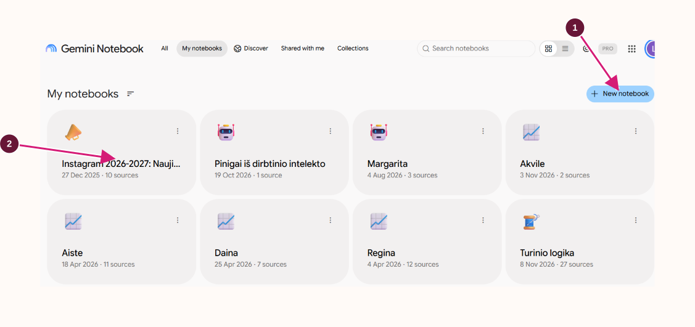
- 1„New notebook“: sukurk naują užrašinę.
- 2Užrašinės kortelė: spausk, kai nori grįžti prie savo medžiagos.
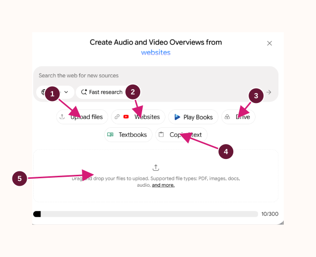
- 1„Upload files“: pasirink failus iš kompiuterio.
- 2„Websites“: pridėk straipsnio ar tinkamo „YouTube“ įrašo nuorodą.
- 3„Drive“: pasirink medžiagą iš „Google Drive“.
- 4„Copied text“: įklijuok nukopijuotą tekstą.
- 5Failus taip pat gali nutempti į šią sritį.
Ką galima pridėti?
Gali dėti PDF, tekstą, „Google Docs“, straipsnio nuorodą, „YouTube“ nuorodą, pristatymus, lenteles, nuotraukas su tekstu ir garso įrašus.
Dėl „YouTube“: nuorodą gali įdėti iš karto. Bet jei video uždarytas arba jame nėra transkripcijos, Gemini Notebook jo nematys. Tada įkelk video transkripciją kaip tekstą. [Šaltiniai]
Tekstas ir failai
PDF, tekstas, „Google Docs“, docx, md, EPUB, „Google Play Books“ el. knygos. Naudok, kai jau turi parašytą medžiagą.
Skaidrės ir duomenys
„Google Slides“ (iki 100 skaidrių), pptx, „Google Sheets“ (iki 100 000 žetonų), csv. Naudok, kai nori iš senų pristatymų ar lentelių gauti atsakymus, o ne ieškoti rankomis.
Svetainės, YouTube, paveikslėliai
Svetainės ar straipsnio nuoroda: Gemini Notebook paima tik tekstą, be paveikslėlių. Mokamų straipsnių, kuriuos mato tik prenumeratoriai, jis neperskaitys. „YouTube“ nuoroda: tik atviras video su transkripcija. Paveikslėliai: jpg, png, webp ir kiti.
Pokalbiai ir užrašai
„Gemini“ pokalbiai ir tavo užrašai taip pat gali būti šaltiniais. Naudok, kai gera mintis jau buvo parašyta kitur.
Vienas šaltinis gali būti iki 500 000 žodžių arba 200 MB. „Google Docs“ ir „Sheets“ iš „Drive“ sinchronizuojami automatiškai kas kelias minutes, tad pakeitus failą naujas variantas pasiekia užrašinę pats. „YouTube“ įrašas turi būti viešas, o ką tik įkeltas (iki 72 val.) gali dar neveikti.
Garso įrašai kaip šaltinis
Gali įkelti MP3, WAV, M4A, MP4 ir kitus garso failus. Jie transkribuojami įkeliant. Lietuvių kalba yra palaikomų importo kalbų sąraše. Nauda: susitikimų įrašai ir balso žinutės tampa šaltiniu, kuriame gali ieškoti ir klausti, o transkripcijos rašyti nereikia. Failai be kalbos nepalaikomi, o prastos kokybės įrašas gali nepavykti. Kiek tiksliai atpažįstama lietuviška kalba konkrečiame tavo įraše: NEŽINOMA, todėl perskaityk transkripciją.
Nemokamoje paskyroje vienoje užrašinėje gali būti iki 50 šaltinių, iš viso iki 100 užrašinių. Mokamuose planuose skaičiai didesni: žr. lentelę 20 skyriuje. Ekrano nuotraukoje matomas 10/300 rodiklis yra mokamos paskyros.
Palauk, kol failai bus apdoroti. Atverk įkeltą šaltinį ir patikrink tekstą. Jei PDF nuskenuotas, nuoroda už prisijungimo ar vaizdo įrašas be subtitrų, gali reikėti tinkamos tekstinės kopijos.
Rask papildomos medžiagos internete
Nebūtina pradėti tik nuo savo failų. Kai trūksta medžiagos, naujų šaltinių gali ieškoti tiesiai užrašinėje. Svarbu atskirti du veiksmus: „Web“ ieško šaltinių pagal temą, o „Websites“ leidžia pridėti jau turimą konkrečią nuorodą.
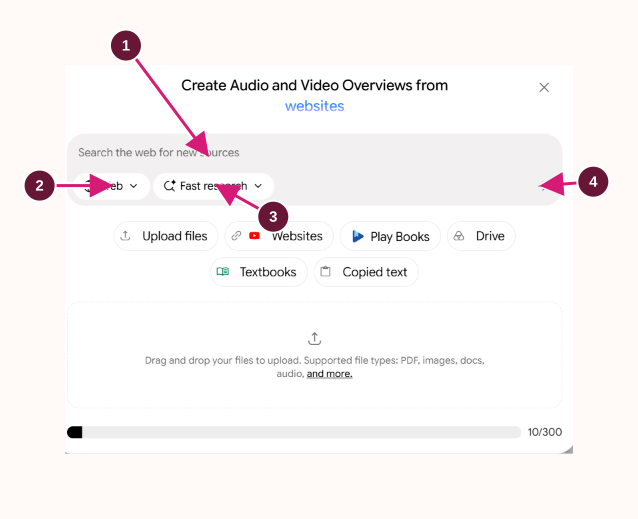
- 11. Paieškos laukelyje aprašyk, kokių šaltinių ieškai.
- 22. „Web“: pasirink interneto paiešką.
- 33. „Fast research“: pasirink paieškos režimą.
- 44. Rodyklė: paleisk paiešką ir tada atsirink rezultatus.
- Įrašyk konkretų paieškos klausimą. Nurodyk temą, laikotarpį, kalbą ir pageidaujamus šaltinius.
- Patikrink „Web“ pasirinkimą. Tavo nuotraukoje jis matomas kairėje, po paieškos laukeliu.
- Pasirink režimą. Nuotraukoje pasirinktas „Fast research“. Jei sąraše siūlomas „Deep Research“, gali rinktis išsamesnį tyrimą; jo prieinamumas ir limitai priklauso nuo paskyros.
- Spausk rodyklę ir peržiūrėk rastus šaltinius. Į užrašinę pridėk tik tuos, kurie iš tiesų atsako į tavo klausimą. Atverk originalus, patikrink datą, autorių ir patikimumą.
- Tęsk darbą su atrinkta medžiaga. Klausk, lygink arba kurk pasirinktą „Studio“ rezultatą. Jei dirbi tik su savo mokymų medžiaga, išorinių šaltinių pridėti neprivalai.
Rask oficialius 2025 ir 2026 m. šaltinius apie tai, kaip mažos paslaugų įmonės gali naudoti dirbtinį intelektą kasdienėms rinkodaros užduotims. Pirmenybę teik pirminiams tyrimams ir oficialiai įrankių dokumentacijai. Ieškok lietuvių ir anglų kalbomis.
Šalia „Web“ gali ieškoti ir savo „Google Drive“. „Deep Research“ yra išsamesnė paieška: ji peržiūri iki šimtų svetainių ir pateikia ataskaitą su šaltiniais. Ji tik 18+ ir turi limitus pagal planą; nemokamo plano riba: NEŽINOMA.
Paieškos aprašymas padeda suformuluoti tikslą, bet nepatvirtina rezultatų kokybės. Pridėjęs rastą straipsnį į šaltinius nepaverčiame jo teisingu vien dėl to, kad jį rado DI. Oficiali šaltinių paieškos instrukcija.
Trys lango dalys, kurias verta pažinti
Su kuo dirbi
Čia yra šaltiniai. Varnelėmis pasirink, kuriuos naudoti konkrečiam klausimui. Siauresnei užduočiai nereikia visada rinktis visų failų.
Ko nori sužinoti
Čia rašyk klausimus, prašyk paaiškinimų, lygink ir tikrink atsakymo nuorodas į šaltinius.
Ką nori sukurti
Garso ir vaizdo apžvalga, skaidrės, minčių žemėlapis, ataskaita, kortelės, testas, infografika ar duomenų lentelė. Čia taip pat atsiranda kuriami ir jau sukurti rezultatai.
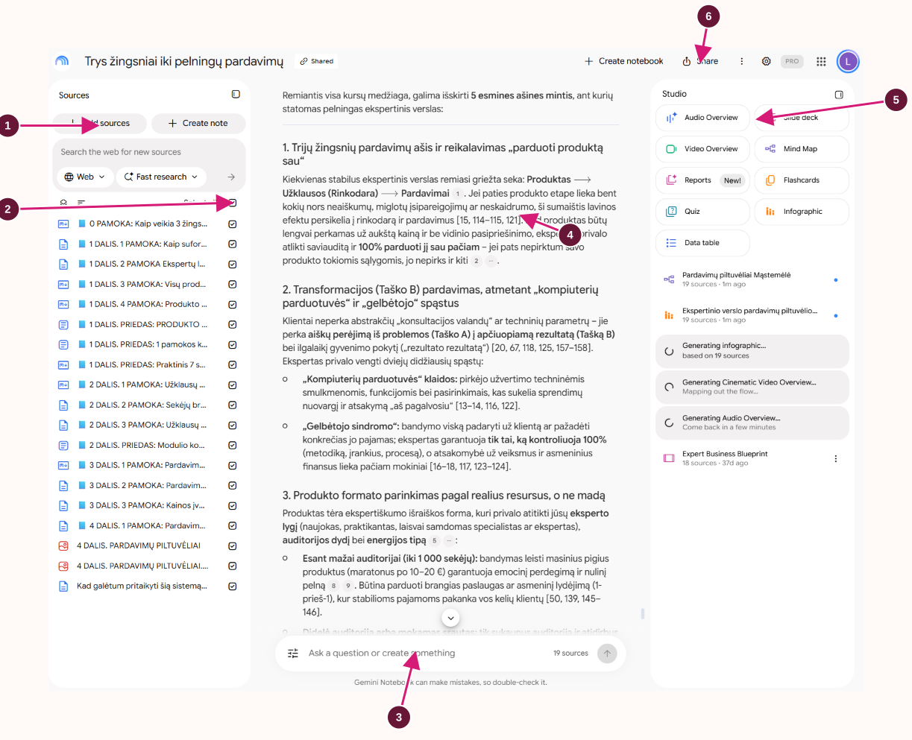
- 1„Add sources“: pridėk dokumentus ir nuorodas.
- 2Varnelės: pasirink, kuriuos šaltinius naudoti.
- 3Klausimo laukelis: čia rašyk savo klausimą.
- 4Nuorodos numeris: atverk atsakymą pagrindžiančią ištrauką.
- 5„Studio“: pasirink, kokį rezultatą nori sukurti.
- 6„Share“: pasidalyk užrašine su kitu žmogumi.
Pilkai pažymėtas „Generating…“ reiškia, kad rezultatas dar kuriamas. Mėlynas taškas prie elemento padeda pastebėti naują rezultatą. Nuotraukos fiksuoja konkrečios paskyros vaizdą 2026-11-13; tavo sąsaja gali skirtis.
Klausk konkrečiai ir tikrink atsakymą
Pradėk nuo to, ką iš medžiagos nori suprasti. Nurodyk tikslą, auditoriją ir pageidaujamą atsakymo formą. Ne kiekvienai užduočiai reikia ilgos užklausos.
Išskirk 5 svarbiausias šios medžiagos mintis. Kiekvieną trumpai paaiškink ir nurodyk ją pagrindžiančius šaltinius. Jei šaltiniai prieštarauja vieni kitiems, pažymėk prieštaravimą.
- Kairėje pažymėk reikalingus šaltinius.
- Įrašyk klausimą vidurinio lango apačioje ir pateik.
- Perskaityk atsakymą. Paspausk mažą nuorodos numerį prie svarbaus teiginio ir palygink jį su originalia ištrauka.
- Jei atsakymas pernelyg bendras, susiaurink: „Paaiškink antrą mintį“ arba „Remkis tik pirmos dalies pamokomis“.
Iš savo medžiagos pasiruošk turinį
Užuot prašiusi „duok 30 idėjų“, pradėk nuo to, ką jau esi paaiškinusi savo mokymuose ar tekstuose. Taip idėjos bus susijusios su tavo tema ir turima medžiaga.
Remkis pasirinktais šaltiniais. Išskirk 8 klausimus, kurie gali kilti paslaugų verslo savininkei apie pardavimus. Kiekvienam pasiūlyk vieną Instagram įrašo arba Reels temą, pagrindinę mintį ir nuorodą į ją pagrindžiantį šaltinį. Nekurk klientų atsiliepimų, statistikos ar rezultatų pažadų. Klausimus, kurie nėra tiesiogiai įvardyti šaltiniuose, pažymėk kaip savo pasiūlymus.
Išplėtok trečią temą į trumpą Instagram įrašo juodraštį. Auditorija: Lietuvos paslaugų verslų savininkės. Pradėk nuo konkrečios situacijos, paaiškink vieną mintį, pabaigoje pasiūlyk vieną pritaikomą veiksmą. Išsaugok šaltinio minties ribas. Nepriskirk kitų autorių asmeninės patirties man.
Ką padarai pati?
Patikrini mintį, įdedi savo patirtį ir pritaikai savo kalbėjimo manierai. Juodraštį verta naudoti kaip pasiruošimą, o ne automatiškai publikuojamą tekstą.
Garso apžvalga: kai patogiau klausytis
„Audio Overview“ padeda išgirsti medžiagos esmę. Tai interpretacija ir apžvalga, o ne pažodinis visų šaltinių įgarsinimas.
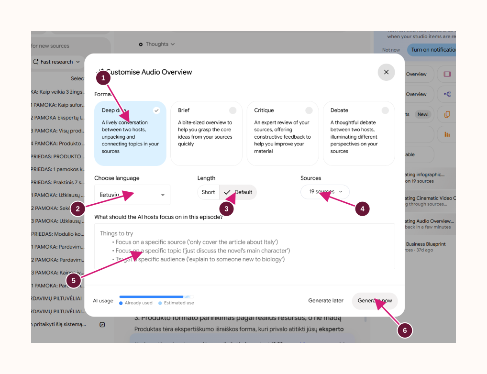
- 1Formatas: pasirink pokalbį, trumpą apžvalgą, kritiką arba debatus.
- 2Kalba: pasirink „lietuvių“.
- 3Trukmė: rinkis iš tavo paskyroje siūlomų variantų.
- 4Šaltiniai: patikrink, iš ko bus kuriamas įrašas.
- 5Užklausa: parašyk, į ką vedėjai turėtų sutelkti dėmesį.
- 6„Generate now“: pradėk generavimą.
- „Deep dive“: dviejų vedėjų pokalbis, kuriame nagrinėjamos ir siejamos temos.
- „Brief“: trumpa svarbiausių minčių apžvalga, vienas kalbėtojas, iki 2 min.
- „Critique“: kritinis medžiagos aptarimas ir grįžtamasis ryšys.
- „Debate“: skirtingų pozicijų aptarimas.
Pasirink „lietuvių“, reikiamus šaltinius ir siūlomą trukmę. Laukelyje apie vedėjų dėmesio centrą aprašyk, kas svarbiausia. Tada spausk „Generate now“. „Generate later“ nėra būtinas šio gido eigai; pradžiai kurk iš karto.
Lietuviškai paaiškink tris pardavimo sistemos dalis: produktą, užklausas ir pardavimą. Auditorija: savarankiškai dirbanti ekspertė. Remkis pasirinktais šaltiniais, paaiškink ryšį tarp dalių ir aptark dažnas klaidas. Pavyzdžius aiškiai atskirk nuo šaltinių faktų. Nekurk pajamų pažadų.
Ką dar verta žinoti apie garso apžvalgą
- Trukmė: „Shorter“, „Default“ arba „Longer“. „Longer“ yra tik anglų kalba, todėl lietuviškai ilgesnio varianto nepasirinksi.
- Interaktyvus režimas „Join“: balsu užduodi klausimą vedėjams. Jis tik anglų kalba, tik naujai sugeneruotoms apžvalgoms, o žmonės, kuriems atsiuntei nuorodą, jo neturi.
- Kalba: 80+ kalbų, numatytoji kalba imama iš „Google“ paskyros nustatymų. Todėl visada pasirink „lietuvių“ ranka.
- Atsisiuntimas: failą (garso įrašą) atsisiųsi žiniatinklio versijoje, grotuve spausdama „Download“. Telefono programėlėje „Download“ išsaugo įrašą tik klausymui pačioje programėlėje be interneto, failo į telefoną negausi. Ar failą pavyks gauti per telefono naršyklę: NEŽINOMA.
- Gali pasidalyti nuoroda ir pažiūrėti, kokia užklausa buvo naudota („View custom prompt“).
Pavyzdį gali paklausyti gido pradžioje.
Lietuviško įrašo trukmės ir paruošimo laiko nežadame iš anksto. [Garso apžvalgos]
Vaizdo apžvalga: paaiškink temą vizualiai
„Video Overview“ kuria vaizdinį temos paaiškinimą pagal šaltinius. Tai nėra automatiškai paruoštas tavo asmeninis kalbėjimas į kamerą ar galutinė reklama.
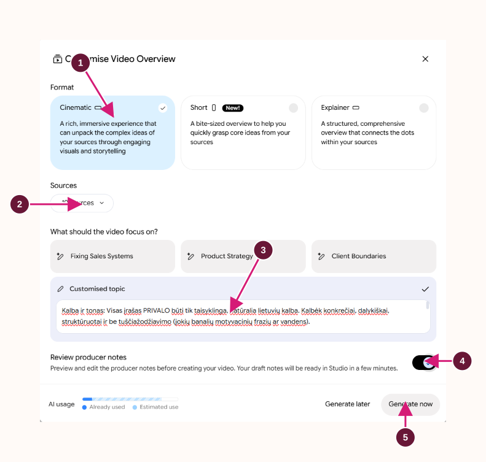
- 11. Pasirink vaizdo formatą.
- 22. Pasirink šaltinius.
- 33. „Customised topic“: įrašyk temą, kalbą, toną ir norimą struktūrą.
- 44. Įjunk „Review producer notes“: pirmiausia bus parengtas planas peržiūrai.
- 55. Spausk „Generate now“, kad pradėtum nuo plano. Galutinį vaizdą kurk tik po jo peržiūros.
- „Cinematic“: vaizdingas pasakojimas sudėtingoms idėjoms. Tik anglų kalba, tik 18+, pagal „Google Workspace“ pranešimą reikia „Google AI Pro“ ar „Ultra“.
- „Short“: apie 60 sekundžių. Lietuvių kalba oficialiame šio formato kalbų sąraše yra, bet vienas antraeilis šaltinis rašo, kad tik anglų. Ar „Short“ kalba lietuviškai: NEŽINOMA, išbandyk pati.
- „Explainer“: nuoseklus temos paaiškinimas ir ryšiai tarp minčių. Lietuvių kalba oficialiame sąraše yra.
Pasirink šaltinius. Laukelyje „Customised topic“ aprašyk norimą temą. Jei įjungsi „Review producer notes“, galėsi peržiūrėti siūlomą planą prieš kuriant galutinį vaizdo įrašą. [Plano peržiūra]
Pirmiausia „Review“: pasitikrink planą prieš kuriant vaizdą
- Įjunk „Review producer notes“. Jungiklis yra po temos aprašymo laukeliu. Nuotraukoje jis jau įjungtas.
- Spausk „Generate now“. Su įjungta peržiūra pirmiausia parengiamos plano pastabos. Jų ieškok „Studio“ skydelyje, prie kuriamos vaizdo apžvalgos, pasirinkusi „Review producer notes“.
- Perskaityk siūlomą planą. Patikrink pagrindinę mintį, temų seką, akcentus ir tai, ar neįtraukta nereikalingų dalių. Pateik pataisymus, pavyzdžiui: „Pradžioje paaiškink problemą, antrą dalį sutrumpink, pabaigoje pridėk tris pasitikrinimo klausimus.“
- Kai planas tinka, tęsk vaizdo kūrimą. Peržiūros lange pasirink siūlomą tęsti ar generuoti veiksmą. Taip galutinis vaizdas kuriamas pagal tavo peržiūrėtą kryptį.
Paruošk trumpą paaiškinimą tema „Kodėl turinio neužtenka, jei neaiškus produktas?“. Remkis pasirinktais šaltiniais. Auditorija: paslaugų verslo savininkė. Struktūra: problema, paaiškinimas, trys pasitikrinimo klausimai. Norima kalba: lietuvių; jei pasirinktas formatas jos nepalaiko, aiškiai tai nurodyk. Nepridėk išgalvotos statistikos ar garantuotų rezultatų.
Pažiūrėk pavyzdį su lietuviškais subtitrais ↗
Vizualūs stiliai
„Explainer“ formatui gali pasirinkti vizualų stilių (tik 18+): „Classic“, „Whiteboard“, „Watercolor“, „Retro Print“, „Heritage“, „Paper-craft“, „Kawaii“, „Anime“. Arba pasirink „Custom“ ir pati aprašyk, kaip turi atrodyti, ar palik automatinį pasirinkimą. Nauda: vaizdas gali atitikti tavo prekės ženklą, o ne atrodyti kaip bet kuri kita apžvalga. Generavimas kartais trunka ilgiau nei 30 minučių, todėl nelauk ekrane.
Vaizdo apžvalgos pavyzdys
Atverk iš mokymų medžiagos sukurtą vaizdo apžvalgą. Pažiūrėk, kaip įrankis sudėliojo pasakojimą, perteikė pagrindines mintis ir pritaikė vaizdus.
Peržiūrėti vaizdo pavyzdį ↗Gali reikėti prisijungti prie „Google“ paskyros. Prieigą lemia pavyzdžio bendrinimo nustatymai.
Prieš dalydamasi patikrink įgarsinimą, vaizduose esančius skaičius, užrašus ir išvadas. Tik po peržiūros naudok atsisiuntimo ar dalijimosi parinktį, jei ji prieinama.
Skaidrės: pasirink pagal tai, kaip pristatysi
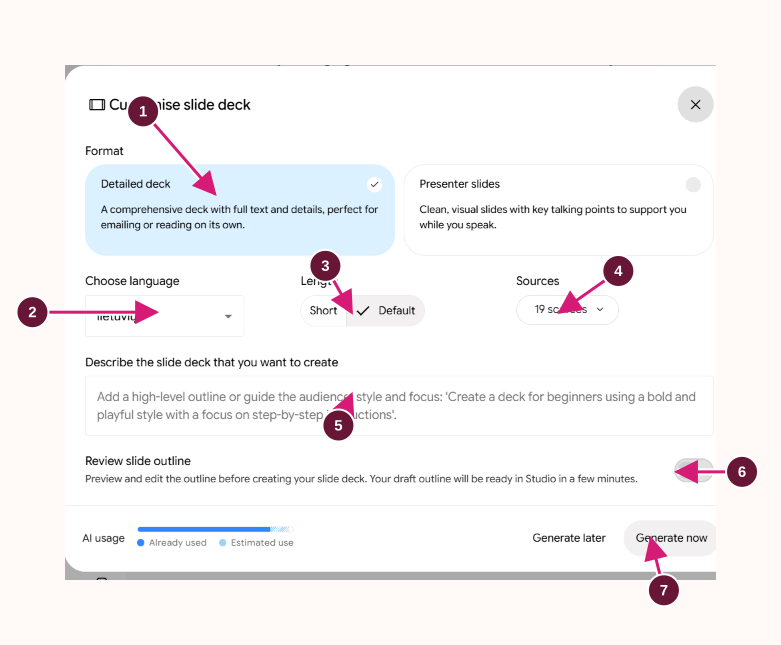
- 1Formatas: „Detailed deck“ skaitymui arba „Presenter slides“ pristatymui.
- 2Kalba: pasirink „lietuvių“.
- 3Apimtis: pasirink trumpesnį arba numatytą variantą.
- 4Šaltiniai: patikrink pasirinktą medžiagą.
- 5Aprašymas: nurodyk temą, auditoriją ir skaidrių stilių.
- 6„Review slide outline“: įjunk, jei nori pirmiausia patikrinti planą.
- 7„Generate now“: kurk pristatymą.
„Detailed deck“
Daugiau paaiškinimų ir teksto. Rinkis, kai žmogus skaitys pristatymą savarankiškai, be tavo komentaro.
„Presenter slides“
Trumpesnės pagrindinės mintys. Rinkis, kai skaidres rodysi per seminarą, o temą išplėtosi pati.
- Pasirink formatą ir lietuvių kalbą.
- Apimtį pradžiai palik „Short“ arba „Default“, pagal tai, kas prieinama.
- Aprašyk auditoriją, tikslą, struktūrą ir pageidaujamą stilių.
- Įjunk „Review slide outline“, jei nori peržiūrėti planą prieš kūrimą. Pirmiausia sutvarkyk minčių seką, tada kurk galutinį pristatymą.
Sukurk trumpą pristatymą lietuviškai tema „Trys žingsniai iki pelningų pardavimų“. Jis skirtas pradedančioms paslaugų verslo savininkėms. Pasiūlyk 7 skaidrių planą: problema, visos sistemos schema, produktas, užklausos, pardavimas, dažnos klaidos, pasitikrinimo klausimai. Remkis šaltiniais, nenaudok nepagrįstų pajamų pažadų. Vizualinis stilius: šviesus fonas, bordo ir fuksijos akcentai, aiški hierarchija, mažai dekoracijų.
Štai ką gavome: pristatymo pavyzdys
„Ekspertinio verslo inžinerija“: iš mokymų medžiagos sugeneruotas 13 skaidrių pristatymas. Žemiau matomos pirmos trys skaidrės. Jos parodo rezultatą: temos įvadą, pardavimo sistemos schemą ir eksperto augimo etapus. Tai atskiras sugeneruotas pavyzdys, o ne aukščiau pateiktos užklausos tikslaus įvykdymo demonstracija.
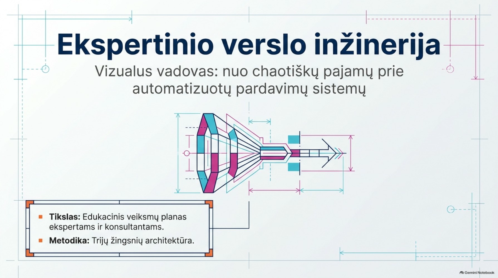
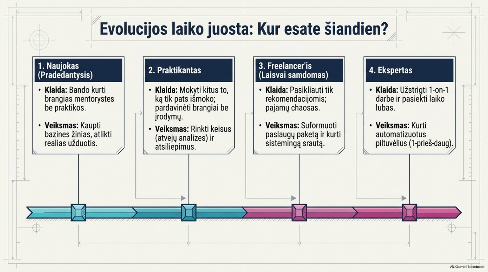
Peržiūrėk visą pristatymą
Atverk visas skaidres Gemini Notebook. Gali reikėti prisijungti prie „Google“ paskyros; prieigą lemia bendrinimo nustatymai.
Peržiūrėti skaidrių pavyzdį ↗Skaidrių skaičius ir spalvos užklausoje yra pageidavimai. Po generavimo patikrink jų laikymąsi, teksto skaitomumą, lietuviškas raides ir faktus.
Taisyk skaidres po vieną: „Revise“
Nereikia kurti viso pristatymo iš naujo, kai nepatinka viena skaidrė. Nauda: pataisai tik tai, kas netinka, o likusi dalis lieka tavo patikrinta.
- Atverk sugeneruotas skaidres ir pasirink „Revise“.
- Prie kiekvienos skaidrės parašyk pastabą: ką keisti tekste, išdėstyme ar vaizduose. Skaidres gali ir pašalinti ar perkelti.
- Spausk „Generate revised deck“.
Eksportas ir rodymas
- PDF ir PowerPoint (.pptx): atsisiųsk ir redaguok savo programoje arba išsiųsk klientei.
- „Start slideshow“: pristatyk skaidres tiesiog ekrane.
- Pokalbyje gali tiesiog parašyti „sukurk skaidres apie X“ ir gauti nustatymų korteles tame pačiame lange.
Skaidrių kūrimas ir taisymas tik 18+.
Infografika: viena mintis viename vaizde
Infografika tinka procesui, palyginimui ar kelioms susijusioms mintims. Pradžiai pasirink vieną aiškią žinutę, o ne visų mokymų santrauką.
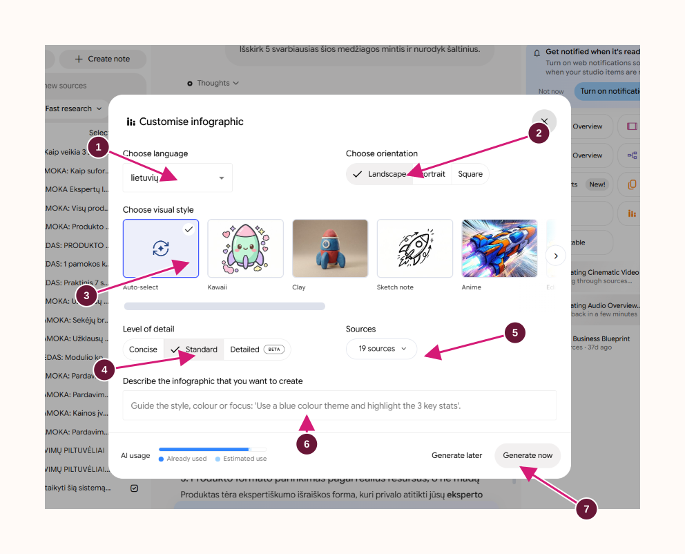
- 1Kalba: pasirink „lietuvių“.
- 2Orientacija: horizontalus, vertikalus arba kvadratinis vaizdas.
- 3Stilius: pasirink patinkantį vaizdinį sprendimą.
- 4Detalumas: trumpas, standartinis arba išsamus variantas.
- 5Šaltiniai: pasirink medžiagą infografikai.
- 6Aprašymas: įrašyk pagrindinę mintį, struktūrą ir spalvas.
- 7„Generate now“: kurk infografiką.
- „Studio“ pasirink „Infographic“ ir lietuvių kalbą.
- „Landscape“: horizontalus, „Portrait“: vertikalus, „Square“: kvadratinis išdėstymas. Rinkis pagal naudojimo vietą.
- Pasirink stilių arba palik „Auto-select“. Prekės ženklo spalvas ir norimą vaizdą aprašyk žemiau.
- Pradžiai rinkis „Concise“ arba „Standard“. Didesnis detalumas ne visada reiškia lengviau skaitomą rezultatą.
Sukurk lietuvišką vertikalią infografiką „Produktas → Užklausos → Pardavimas“. Kiekvienai daliai skirk trumpą paaiškinimą ir vieną pasitikrinimo klausimą, remdamasis šaltiniais. Šviesus fonas, bordo antraštės, fuksijos akcentai, aiški skaitymo kryptis. Nedėk išgalvotų skaičių, logotipų ar tariamų klientų atsiliepimų.
Štai ką gavome: du infografikos variantai
Iš tos pačios mokymų temos galima gauti skirtingus vaizdinius paaiškinimus. Pirmame variante akcentuojami pardavimo piltuvėlio etapai, antrame produkto, turinio ir pardavimo ryšys. Tai tikri sugeneruoti pavyzdžiai, o ne aukščiau pateiktos užklausos tikslaus įvykdymo demonstracija. Paspausk vaizdą, kad galėtum perskaityti detales.
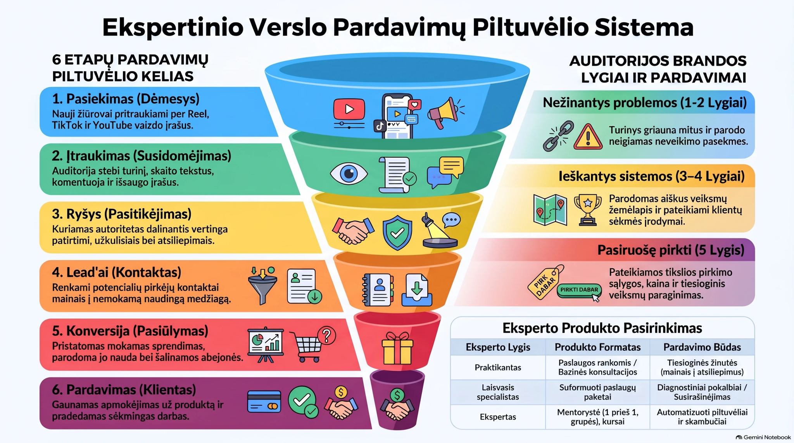
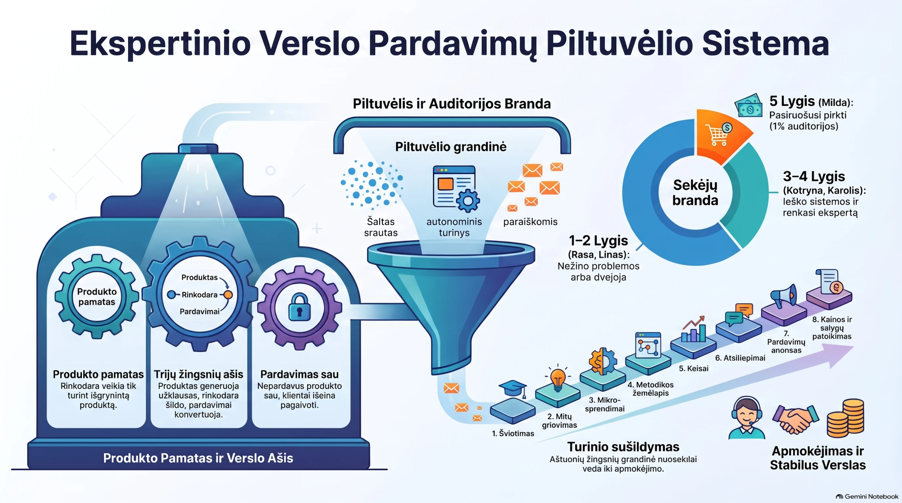
Šiuose pavyzdžiuose matyti ir DI ribos: kai kurios formuluotės skamba nenatūraliai ar yra neaiškios. Antrame variante pateiktą „1 % auditorijos“ teiginį prieš naudojant reikėtų sutikrinti su šaltiniu. Vizualiai patrauklus rezultatas dar nėra redaguotas galutinis maketas.
Stiliai pavadinimais: „Sketch Note“, „Kawaii“, „Professional“, „Scientific“, „Anime“, „Clay“, „Editorial“, „Instructional“, „Bento Grid“, „Bricks“. Infografiką gali atsisiųsti kaip PNG. Tik 18+. Vandens ženklas: matomas ženklas pridedamas vaizdams ir vaizdo įrašams, jį išjungti gali tik „Pro“ ir „Ultra“ planų naudotojos (ne visose šalyse). Jei dėsi infografiką į socialinius tinklus, tai svarbu.
Prieš publikuodama padidink vaizdą ir perskaityk visus užrašus. Patikrink rašybą, tekstų nukirpimą, rodyklių kryptį ir tai, ar išlieka pradinė minties prasmė.
Minčių žemėlapis: pamatyk visos temos ryšius
„Mind Map“ padeda suskaidyti temą į šakas. Jis naudingas prieš planuojant seminarą, mokymų modulį ar turinio seriją.
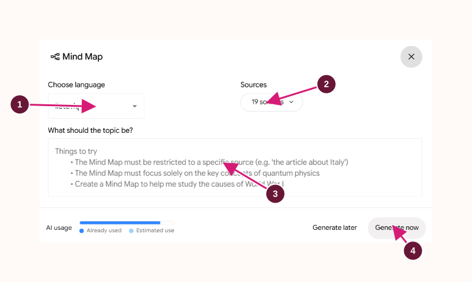
- 1Kalba: pasirink „lietuvių“.
- 2Šaltiniai: pasirink dokumentus žemėlapiui.
- 3Tema: nurodyk, kokius ryšius ir temos dalis nori matyti.
- 4„Generate now“: kurk minčių žemėlapį.
- Pasirink „Mind Map“, kalbą ir reikalingus šaltinius.
- Nurodyk, kokį temos pjūvį nori matyti. Jei domina tik produkto dalis, nepalik užduoties apie visus mokymus.
- Sugeneruok, atverk rezultatą ir nagrinėk šakas. Patikrink, ar svarbūs ryšiai nepraleisti.
Sudaryk minčių žemėlapį apie trijų dalių pardavimo sistemą. Pagrindinės šakos: produktas, užklausos, pardavimas. Po kiekviena išskirk šaltiniuose aptariamus principus, klaidas ir pasitikrinimo klausimus. Nesujunk skirtingų sąvokų vien dėl panašių pavadinimų.
Atverk minčių žemėlapio pavyzdį
Išskleistas žemėlapis yra didelis, todėl jį patogiau nagrinėti pačiame įrankyje: išskleisti dominančias šakas ir judėti per temą savo tempu.
Atverti pavyzdį Gemini Notebook ↗Gali reikėti prisijungti prie „Google“ paskyros. Prieigą lemia pavyzdžio bendrinimo nustatymai.
Kortelės ir testai: pasitikrink, ką supratai
Mokymosi kortelės · „Flashcards“
Kortelės padeda kartoti sąvokas ir jų ryšius. Pirmiausia pabandyk atsakyti pati, tik tada atverk atsakymą.
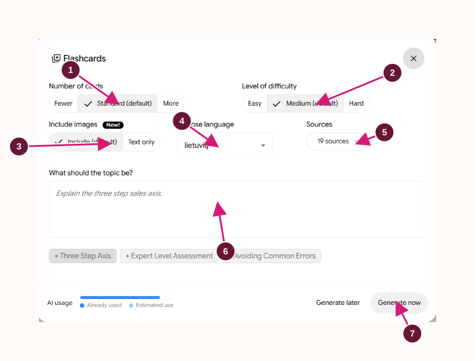
- 1Kortelių kiekis: mažiau, standartinis arba daugiau.
- 2Sunkumas: lengvas, vidutinis arba sunkus.
- 3Paveikslėliai: įtrauk arba pasirink tik tekstą.
- 4Kalba: pasirink „lietuvių“.
- 5Šaltiniai: pasirink medžiagą kortelėms.
- 6Tema: įrašyk, ką nori išmokti ir pasikartoti.
- 7„Generate now“: kurk korteles.
Pasirink „Fewer“, „Standard“ arba „More“, norimą sunkumą ir vaizdų įtraukimą. Pradžiai pakanka mažesnio rinkinio apie vieną temą.
Paruošk mokymosi korteles apie produkto, užklausų ir pardavimo skirtumus. Vienoje kortelėje tikrink vieną sąvoką arba ryšį. Klausimai lietuviški, atsakymai trumpi ir pagrįsti pasirinktais šaltiniais. Įtrauk dažnai painiojamas sąvokas.
Testas · „Quiz“
Testas padeda pasitikrinti ne tik apibrėžimus, bet ir tai, ar moki mintį pritaikyti situacijai.
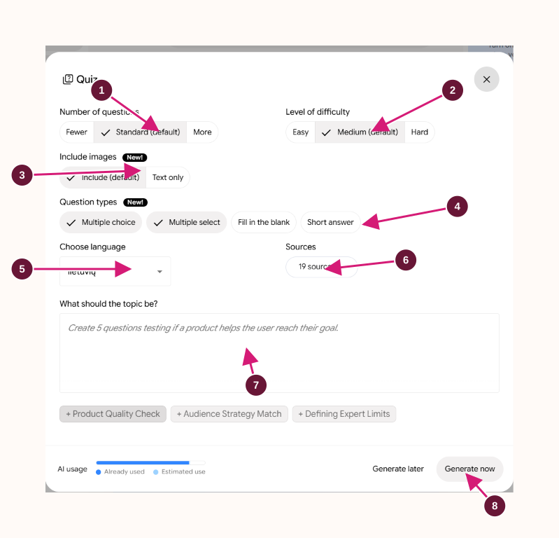
- 1Klausimų kiekis: pasirink rinkinio dydį.
- 2Sunkumas: pasirink lygį.
- 3Paveikslėliai: įtrauk arba palik tik tekstą.
- 4Klausimų tipai: pasirink, kaip atsakinėsi.
- 5Kalba: pasirink „lietuvių“.
- 6Šaltiniai: pasirink testo medžiagą.
- 7Tema: aprašyk, kokias žinias ar situacijas tikrinti.
- 8„Generate now“: kurk testą.
Pasirink kalbą, šaltinius ir norimus klausimų tipus. Jei testas skirtas klientams ar mokiniams, prieš dalydamasi patikrink kiekvieną teisingą atsakymą.
Sukurk testą lietuviškai apie trijų dalių pardavimo sistemą. Daugiausia dėmesio skirk situacijoms: ką reikėtų taisyti produkte, ką užklausų pritraukime, o ką pardavimo procese? Remkis šaltiniais. Venk dviprasmiškų klausimų ir nepateik situacijos, kur keli atsakymai teisingi, kaip vieno pasirinkimo klausimo.
Ataskaitos ir lentelės: kai reikia tvarkos
Pagrindinio lango „Studio“ skydelyje taip pat matomos „Reports“ ir „Data table“. Jos naudingos, kai informaciją nori skaityti struktūruotai ar palyginti.
Reports / ataskaitos
Pasiruošk temos apžvalgą, instrukcijos ar mokymų plano juodraštį. Formatai: FAQ (DUK), „Study guide“ (studijų gidas), „Briefing document“ (trumpa apžvalga sprendimams), „Blog post“ (tinklaraščio įrašas), formatai, kuriuos pasiūlo pats įrankis pagal temą, ir „Custom“, kur pati apibrėži struktūrą, stilių ir toną.
Data table / lentelė
Susistemink palyginamus duomenis: metodus, etapus, kriterijus. Nurodyk, kokių stulpelių reikia ir iš kurių šaltinių imti informaciją.
Parenk trumpą temos ataskaitą: problema, pagrindiniai šaltinių teiginiai, taikymo veiksmai ir neatsakyti klausimai. Atskirk tiesiogiai šaltiniuose pateiktą informaciją nuo siūlomo pritaikymo. Prie svarbių išvadų nurodyk šaltinius.
Palygink šaltiniuose aprašytus tris pardavimo sistemos etapus. Stulpeliai: etapas, tikslas, dažna klaida, pasitikrinimo klausimas, šaltinis. Jei reikšmės šaltiniuose nėra, rašyk „nenurodyta“, o ne spėk.
- „Blog post“: juodraštis iš tavo paties medžiagos. Nauda: turi pradžią savo tekstui ir nerašai nuo tuščio lapo.
- Kalba: ataskaitai gali pasirinkti kalbą (80+ kalbų). Pasirink „lietuvių“ ir patikrink rezultatą.
- Eksportas: ataskaitą gali eksportuoti į „Google Docs“, lentelę į „Google Sheets“. Lentelės antrame skirtuke matysi citatas. Nauda: toliau redaguoji įprastoje programoje.
Šių dviejų funkcijų nustatymų nuotraukų čia nėra. Tikslus ataskaitų skaičiaus limitas asmeninei paskyrai: NEŽINOMA. Užklausas gali naudoti ir pagrindiniame pokalbyje. [Ataskaitos]
Pokalbio nustatymai ir užrašai: asistentas tavo tonu
Pokalbyje gali nustatyti, kaip asistentas kalba, ir išsaugoti gerus atsakymus. Pokalbio nustatymai yra prieinami visiems.
Pokalbio nustatymai: „Configure chat“
Gali pasirinkti „Default“, „Learning Guide“ arba „Custom“, kur pati įrašai vaidmenį, stilių ir tikslą. Taip pat gali nustatyti atsakymo ilgį. Nauda: vieną kartą nustatai, ir asistentas visuose atsakymuose laikosi tavo vaidmens bei tono, pavyzdžiui, klientų kortelėje.
Būk mano rinkodaros strategė. Kiekvienas atsakymas turi būti iškart veiksmų planas: kokius žingsnius daryti ir kokia tvarka. Remkis tik pasirinktais šaltiniais ir pasakyk, jei informacijos juose nėra.
Mobiliojoje programėlėje pokalbio nustatymų nėra: nustatyk juos kompiuteryje. Oficialiame puslapyje „Custom“ instrukcijos ilgio limito nėra: NEŽINOMA. [Pokalbio nustatymai]
Išsaugok gerą atsakymą kaip užrašą: „Save to note“
- Gavusi gerą atsakymą, paspausk „Save to note“. Užrašas išsaugomas su lentelėmis ir paspaudžiamomis citatomis.
- Savo mintį gali įrašyti pati per „Create note“.
- Užrašai rodomi šaltinių skydelyje. Juos gali pasirinkti ar išjungti, kaip bet kurį šaltinį, ir naudoti klausimams, citatoms ir „Studio“ rezultatams.
Nauda: tavo paties išvados ir šaltiniai yra vienoje vietoje, o užrašu galima remtis tolesniuose klausimuose, pavyzdžiui: „Padaryk testą iš mano užrašų“. Užrašą gali eksportuoti į „Google Docs“. Pagal „Google Labs“ atstovo pranešimą užrašai neįskaičiuojami į šaltinių limitą, bet oficialioje planų lentelėje tikslus užrašų skaičius: NEŽINOMA. Telefone užrašus gali skaityti ir naudoti klausimams, bet ne redaguoti. [Užrašai]
Jei nori pasidalyti: kas ką mato
Jei nori pasidalyti užrašine, pavyzdžiui, su komanda ar klientu, pirmiausia žinok, ką kiekvienas žmogus joje matys. Todėl žinok teises prieš dalindamasi. Savo klientų užrašinėmis pati nesidalinu, o klientams tik rekomenduoju susikurti savo.
| Teisė | Ką gali žmogus | Kada rinktis |
|---|---|---|
| Viewer | Skaito šaltinius ir užrašus | Kai žmogus tik naudoja tavo paruoštą medžiagą |
| „Chat view“ | Mato tik pokalbį | Kai nori parodyti tik klausimus ir atsakymus. Tai ne apsauga: žr. pastabą žemiau |
| Editor | Prideda ir šalina šaltinius, dalijasi toliau | Kai dirbate kartu, pavyzdžiui, su kolege |
- Pokalbio istorija privati: bendrinamoje užrašinėje matai tik savo pokalbį, ne kitų.
- Kiek žmonių: su asmenine „Gmail“ paskyra gali dalintis su iki 50 žmonių. „Google“ grupėms dalintis negali.
- Viešas režimas („Anyone with a link“): žmogui reikia „Google“ paskyros. Per nuorodą pasidalinti rezultatai, pavyzdžiui, skaidrės ar garso įrašas, gali būti matomi ir be prisijungimo.
- „Allow copies“: gali leisti žmonėms pasidaryti kopiją. Statistika rodoma, kai užrašine naudojasi bent 4 kiti naudotojai.
- „Advanced sharing“: yra mokamuose planuose (nuo „Plus“). Kas tiksliai ten įeina: NEŽINOMA.
Telefone: programėlė
„Gemini Notebook“ turi mobiliąją programėlę: Android 10+ ir iOS 17+. Nauda: užrašine gali naudotis kelyje, o garso apžvalgą klausyti be interneto.
Veikia programėlėje
Klausimai pagal šaltinius, garso apžvalga su atsisiuntimu klausymui be interneto (skiltis „Downloaded“), skaidrės, infografikos, kortelės, testai, vaizdo apžvalgos, šaltinių paieška („Fast Research“), gyvas balso pokalbis „Talk naturally“ (tik 18+). Svetainę ar PDF gali pridėti per „Share“ iš kitos programos.
Apribojimai
Šaltiniai tik PDF, svetainė, „YouTube“, garsas ir tekstas. Nėra pokalbio nustatymų ir analitikos. Užrašų, minčių žemėlapių, ataskaitų ir duomenų lentelių kūrimas oficialiame puslapyje neįjungtas, bet vienas antraeilis šaltinis rašo, kad ataskaitos jau atsirado: NEŽINOMA.
Lietuvių kalba yra programėlės kalbų sąraše, o Lietuva yra „Android“ šalių sąraše. „iOS“ šalių sąrašas: NEŽINOMA. [Mobilioji programėlė]
Kur gali susitaupyti darbo laikas?
Didžiausia nauda atsiranda tada, kai tą pačią medžiagą panaudoji kelis kartus. Pavyzdžiui: perskaitytą seminarą analizuoji vienoje užrašinėje, išsirenki temas, pasiruoši skaidres ir susikuri garso apžvalgą kartojimui.
| Pasikartojantis darbas | Kaip padeda asistentas | Ką vis tiek tikrini pati |
|---|---|---|
| Ieškai minties ilgame dokumente | Randa susijusias ištraukas ir parengia atsakymą | Ar ištrauka pagrindžia teiginį |
| Ruoši naujo turinio temas | Pasiūlo temas iš tavo šaltinių | Aktualumą, savo poziciją ir faktus |
| Dėlioji pristatymą nuo tuščio lapo | Parengia planą ir skaidrių variantą | Logiką, skaitomumą ir naudojimo teises |
| Peržiūri medžiagą prieš mokymus | Sukuria apžvalgą, korteles ar testą | Ar nepraleista svarbi dalis |
Pasimatuok savo rezultatą
Pasirink tris dažnas užduotis. Užrašyk, kiek jos trunka įprastai ir kiek su asistentu, įskaitant rezultatų tikrinimą bei taisymą. Skirtumą padaugink iš kartų per savaitę. Taip sužinosi savo sutaupytą laiką.
Pamatyk, kaip atrodo rezultatai
Gide jau matai nustatymus. O tikrą garso ir vaizdo kokybę geriausia įvertinti išklausius ar pažiūrėjus pavyzdį.
Paklausyk prieš kurdama savo
Erikos kanale ieškok su šiuo gidu paskelbtos garso apžvalgos. Palygink, kaip ji perteikia šaltinių mintis ir taria lietuviškus terminus.
Atverti Erikos kanalą →Palygink formatą su savo tikslu
Peržiūrėk iš mokymų medžiagos sukurtą vaizdo apžvalgą. Įvertink, ar toks paaiškinimas tiktų tavo auditorijai ir kur reikėtų tavo pataisymų.
Peržiūrėti vaizdo pavyzdį ↗Vaizdo nuoroda atveria konkretų pavyzdį Gemini Notebook. Garso mygtukas kol kas veda į bendrą Erikos kanalą; tiesioginė įrašo nuoroda bus pridėta paskelbus pavyzdį.
Išbandyk su viena
savo tema.
Pradžiai nereikia susikelti visų mokymų. Pasirink kelis susijusius šaltinius, užduok vieną gerą klausimą ir sukurk vieną naudingą rezultatą.
Prisijunk prie DI bibliotekos ↗Panaudok užrašinę pačiame Gemini
Surinktą medžiagą gali naudoti ir „Gemini“ pokalbyje: pavyzdžiui, iš mokymų minčių pasiruošti konkretaus kliento veiksmų planą ar palyginti kelis pritaikymo variantus. Užrašinės kontekstas padeda nereikėti iš naujo kelti kiekvieno failo.
1. Prijunk „Gemini Notebook“
- Atverk gemini.google.com su ta pačia „Google“ paskyra, kurioje yra tavo užrašinė.
- Pokalbyje įrašyk @Gemini Notebook ir paprašyk parodyti tavo užrašines. Jei pasirodo prijungimo pasiūlymas, sek ekrano instrukcijas. Ryšį taip pat gali valdyti „Connected Apps“ nustatymuose.
- Pasirink reikiamą užrašinę arba aiškiai nurodyk jos pavadinimą.
Lietuvoje, kaip ir kitose Europos ekonominės erdvės šalyse, pagal dabartinę „Google“ instrukciją šią paslaugą reikia prijungti rankiniu būdu. Funkcija diegiama palaipsniui. Kitų žmonių su tavimi pasidalytos užrašinės „Gemini“ sąraše nerodomos taip pat kaip tavo nuosavos. Prijungimo instrukcija ir prieinamumas.
2. Pridėk užrašinę prie pokalbio
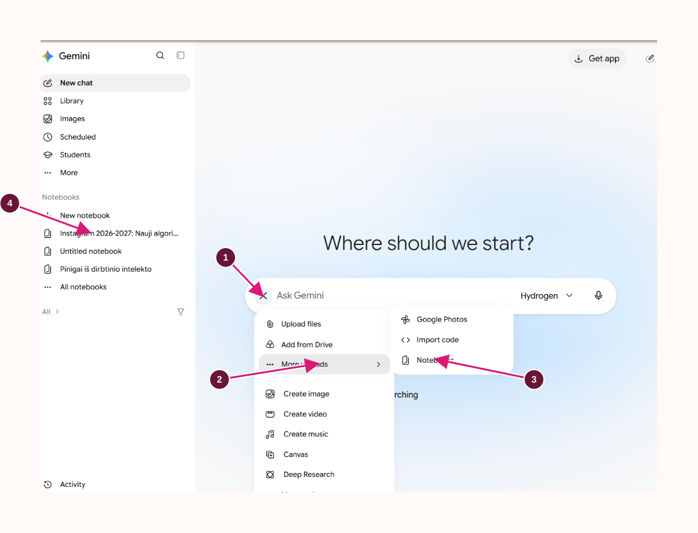
- 11. Priedų mygtukas prie įvesties laukelio: atverk pridėjimo meniu. Kai meniu atvertas, vietoje „+“ matomas kryžiukas.
- 22. „More uploads“: atverk papildomus pridėjimo būdus.
- 33. „Notebooks“: atverk užrašinės pasirinkimą ir pasirink reikiamą.
- 4Užrašines taip pat matai kairėje, skiltyje „Notebooks“. „All notebooks“ atveria visą sąrašą.
Oficiali kompiuterio instrukcija taip pat numato užrašinės pridėjimą per failų meniu. Jei šį pasirinkimą matai savo paskyroje, pridėk užrašinę ir pateik užklausą. Užrašinės pridėjimas.
Remkis pridėtos užrašinės mokymų medžiaga. Padėk parengti 7 dienų veiksmų plano juodraštį paslaugų verslo savininkei, kuri turi aiškų pasiūlymą, bet sulaukia mažai užklausų. Pirmiausia užduok 3 klausimus apie jos situaciją. Vėliau atskirk mokymuose pateiktus principus nuo savo siūlomo pritaikymo. Jei reikalingos informacijos šaltiniuose nėra, pasakyk. Nepridėk interneto faktų be atskiro mano prašymo.
3. Ką dar gali daryti su @Gemini Notebook
Per @Gemini Notebook pačiame „Gemini“ pokalbyje gali sukurti, redaguoti ir ištrinti užrašinę, pridėti šaltinių, išsaugoti užrašus, užduoti užrašinei klausimą ir išvardyti šaltinius. Taip pat pokalbį iš „Gemini“ gali pridėti kaip šaltinį. Užrašinės matomos kairėje „Gemini“ pusėje ir sinchronizuojamos. Nauda: nereikia perjunginėti langų, kai planuoji turinį su asistentu. [Veiksmai „Gemini“]
„Google Docs“: rašydama dokumente gali įrašyti „@“ ir pasirinkti užrašinę. „Gemini“ remiasi jos šaltiniais ir pateikia citatas. Tai tik „Google AI Pro“ ir „Ultra“ planuose (ir kai kuriuose „Workspace“ planuose). Ar tai veikia Lietuvoje: NEŽINOMA. [„Docs“ ir užrašinė]
Ką verta žinoti prieš pradedant
- Pradėti galima nemokamai, bet taikomi limitai. Nuotraukose yra PRO paskyra. Jos matomi formatai, limitai ir naujienos nebūtinai prieinami nemokamai paskyrai. Ypač patikrink „Cinematic“ ir kitas papildomas galimybes. Daug „Studio“ funkcijų (skaidrės, vaizdo apžvalga, infografika) tik 18+.
- Fiksuotų dienos limitų nebėra. Nuo 2026-09-02 asmeninėms paskyroms nebeliko fiksuotų dienos limitų, apie kuriuos rašo kai kurios svetainės (pavyzdžiui, 50 klausimų ir 3 garso apžvalgos per dieną). Dabar naudojimas skaičiuojamas pagal sunaudotą kompiuterinę galią. Jis atsinaujina kas 5 valandas ir turi savaitės ribą. Nustatymuose („Settings“ → „Usage“) matai, kiek sunaudota. „Studio“ prieš kuriant parodo prognozuojamą kainą, o su „Generate later“ gali sukurti vėliau. Kiek tiksliai generavimų gauna nemokama paskyra: NEŽINOMA, nes „Google“ skaičių neskelbia. [Limitai]
- Kalbą tikrink ir nustatymuose, ir galutiniame rezultate. Mano patikrinta: vaizdo apžvalgoje skaidrės ir vaizdai būna lietuviškai, bet pasakotojas kalba angliškai, todėl reikia subtitrų. Garso apžvalga kalba lietuviškai su nedideliu akcentu. „Cinematic“ vaizdo formatas tik anglų kalba.
- Nemeluoja, bet gali suklysti. Asistentas neprisigalvoja: jis remiasi tik tavo duota medžiaga ir parodo, iš kur paėmė atsakymą. Tačiau suklysti gali: neteisingai suprasti klausimą ar praleisti detalę. Melas ir klaida yra skirtingi dalykai, todėl tikrink ir teksto atsakymus, ir sugeneruotą garsą, vaizdus bei skaidres.
- Nauji šaltiniai automatiškai nepataiso senų rezultatų. Atnaujinusi medžiagą peržiūrėk, ar nereikia rezultato sukurti iš naujo.
- Ne viskas paruošiama per kelias minutes. Nuotraukose matomos kuriamos užduotys. Palauk rezultato ir įsitikink, kad jis baigtas.
Planai ir skaičiai
| Planas | Užrašinių | Šaltinių vienoje užrašinėje | Naudojimo limitas |
|---|---|---|---|
| Nemokamas | 100 | 50 | Standartinis |
| „Google AI Plus“ | 200 | 100 | Apie 2 kartus didesnis |
| „Google AI Pro“ | 500 | 300 | Apie 4 kartus didesnis |
| „Google AI Ultra“ (20 TB) | 500 | 500 | Dar didesnis, tikslus skaičius: NEŽINOMA |
| „Google AI Ultra“ (30 TB) | 500 | 600 | Dar didesnis, tikslus skaičius: NEŽINOMA |
Tik mokamuose planuose: „Advanced sharing“ (nuo „Plus“), vandens ženklo valdymas („Pro“ ir „Ultra“). „Custom chat“ ir analitika yra visiems. Absoliučių naudojimo skaičių „Google“ neskelbia. Kainos Lietuvoje eurais: NEŽINOMA. [Planai]
Oficialūs šaltiniai
Patikrinta 2026-11-13. Ekrano nuotraukos yra Erikos pateiktos tos pačios dienos paskyros nuotraukos. Jos rodo nustatymus, o ne visų sugeneruotų rezultatų kokybės patikrą.
- Šaltinių pridėjimas ir apribojimai
- Pokalbis ir atsakymų nuorodos į šaltinius · Įrankio galimybės ir klaidų tikimybė
- Garso apžvalgos ir jų nustatymai
- Skaidrių ir vaizdo plano peržiūra prieš generavimą
- Nemokami ir mokami planai
- Nauji lankstūs naudojimo limitai
- Ataskaitos ir eksportas
- Pokalbio nustatymai ir vaidmenys
- Užrašai
- Bendrinimas
- Mobilioji programėlė
- Skaidrės: taisymas ir eksportas · Vaizdo apžvalga: formatai, kalbos, stiliai
- Veiksmai su užrašinėmis „Gemini“ programoje
- „Google Docs“ ir užrašinės šaltiniai